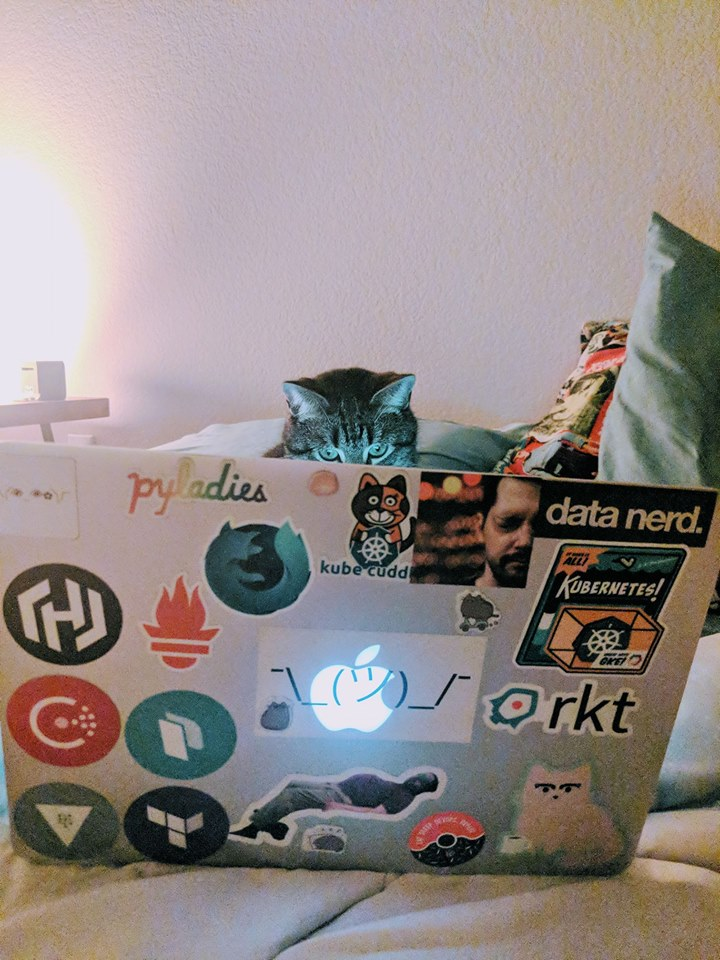

Some-Type-A Systems Engineer
You can find me running through the convention center halls, or hidden in the back corners of a coffee shop piled under empty cups.This blog’s purpose is meant to aide me in the creation of talks, understanding and investigating the subject matter, and general exploration. If there’s anything you’d love to see here, let me know!

Talks
Feel free to reach out via e-mail if you think I would be a good speaker for a convention!HashiConf 2018
Title: You. Must. Build. A. Raft Slides
Abstract: Consensus is a fundamental problem in our distributed systems to achieve system reliability. Raft sets out to solve this problem, in a different approach then the first solution, Paxos. But how does Raft make this decisions, and why should anyone trust it? Come join us in breaking down and understanding Raft!
Abstract: Consensus is a fundamental problem in our distributed systems to achieve system reliability. Raft sets out to solve this problem, in a different approach then the first solution, Paxos. But how does Raft make this decisions, and why should anyone trust it? Come join us in breaking down and understanding Raft!
KubeCon & Cloud Native Con EU 2018
Title: You Ever Wonder Why We’re Here?
Slides
Abstract: Let’s journey back to the 1960s, and start with the beginning of Virtual Machines. Why were these old behemoths made, and how do they work again? Let’s recall when to use Virtual Machines, and their best practices. Then we’ll travel to the dawn of containers, exploring their conception, birth, and where we are today. Finally, wrapping things up with figuring out why were are here, right now, at KubeCon! We’ll unwrap Container Orchestration, container runtimes, and the many acronyms buzzing around.
Abstract: Let’s journey back to the 1960s, and start with the beginning of Virtual Machines. Why were these old behemoths made, and how do they work again? Let’s recall when to use Virtual Machines, and their best practices. Then we’ll travel to the dawn of containers, exploring their conception, birth, and where we are today. Finally, wrapping things up with figuring out why were are here, right now, at KubeCon! We’ll unwrap Container Orchestration, container runtimes, and the many acronyms buzzing around.
Container World 2018
Title: From the Beginning: Hypervisors, Virtual Machines, and ContainersAbstract: Containers are nothing new to the industry, but it’s surge in popularity have many engineers questioning the best use cases for virtual machines and containers. It’s hard to figure out what is best for your application without understanding what the strengths of these technologies are. It’s time to break down the barriers and understand containers, the difference between rkt and Docker, and all the acronyms buzzing through the community right now. Let’s learn about the why’s and whens to use virtual machines, containers, or both!